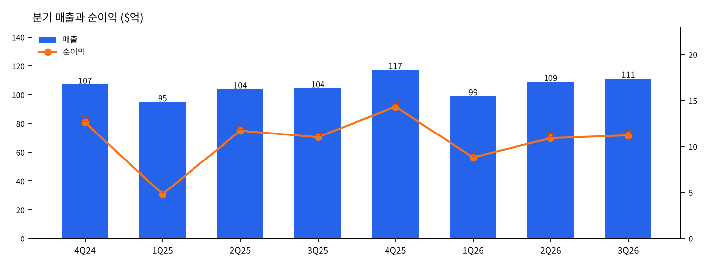
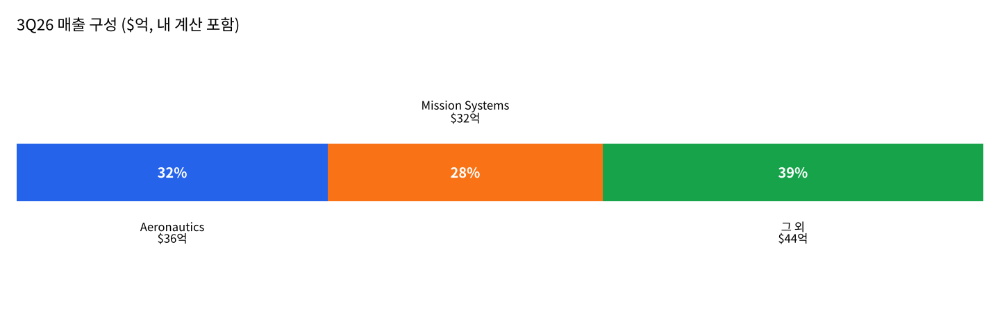
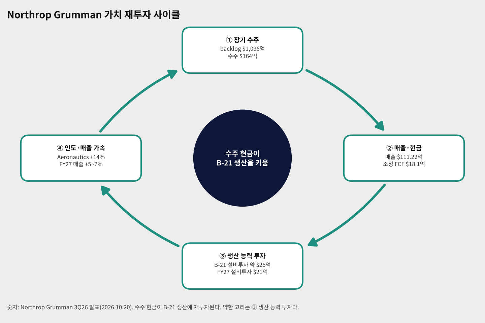

Northrop Grumman은 국방부와 장기 계약으로 항공기·우주·미사일을 만든다. B-21·Sentinel 같은 대형 프로그램 비중이 크다.
| 항목 | 내용 |
|---|---|
| 종목 | Northrop Grumman (NOC) · NYSE · 방산·우주 · 버지니아 폴스처치 |
| 최근 분기(3Q26) | 매출 $111.22억, EPS $7.89 |
| 핵심 사업 | Aeronautics, Defense Systems, Mission Systems, Space Systems |
| 직원 수 | 약 95,000명(트레이딩뷰) |
| 멀티플 | PER·PEG·P/S는 08~10 항목 표 참조 |
| 직책 | 인물 | 역할·특징 |
|---|---|---|
| 회장·CEO | 캐시 워든(Kathy Warden) | B-21 가속과 2027년 성장 가속을 설명 |
| CFO | 존 그린(John Greene) | (AWP Alliance News 기준, 확인 필요) |
경영 스타일: 규율 있는 실행. 대형 프로그램의 일정·비용을 지키고 생산 능력에 투자한다.
B-21 폭격기와 Sentinel 대륙간 탄도미사일이 장기 매출을 만든다.
고체 로켓 모터·극초음속 추진·위성 제조 능력을 늘린다.
다음 실적발표는 세 가지 질문에 답하는 자리다.
1. B-21 투자가 현금을 얼마나 누르나?
2. backlog가 매출 성장 5~7%로 이어지나?
3. Sentinel 비용형 계약이 마진을 누르나?
한 줄 판정 규칙: 첫 질문(B-21 투자)이 계획대로이면 약한 고리인 ② 현금 부담이 관리된다고 본다.
일정: 4Q26 실적 발표는 2027.01.28 예정(트레이딩뷰). 2027 가이던스가 확정된다.
| 분기 | 매출 | 순이익 | EPS | 조정 EPS | 특이 사항 |
|---|---|---|---|---|---|
| 4Q24 | $106.9억 | $12.6억 | 8.72 | 6.39 | |
| 1Q25 | $94.7억 | $4.8억 | 3.32 | 3.32 | |
| 2Q25 | $103.5억 | $11.7억 | 8.15 | 8.15 | |
| 3Q25 | $104.2억 | $11.0억 | 7.67 | 7.67 | |
| 4Q25 | $117.1억 | $14.3억 | 10.05 | 7.23 | |
| 1Q26 | $98.8억 | $8.8억 | 6.14 | 6.14 | |
| 2Q26 | $108.8억 | $10.9억 | 7.68 | 7.68 | |
| 3Q26 | $111.2억 | $11.2억 | 7.89 | 7.89 | backlog $1,096억, B-21 투자 확대 |
매출은 트레이딩뷰 스캐너의 분기 총매출이라 회사가 발표한 순매출과 다를 수 있다. 조정 EPS는 유가증권 평가손익(MTM)을 뺀 값이다. 매출·순이익·EPS(GAAP 희석)는 트레이딩뷰 스캐너, 조정 EPS는 트레이딩뷰 실적 페이지의 Reported 값이다. 분기 정렬은 오래된 분기→최신이다.

흐름 요약: 최근 분기 매출은 $111.2억로 전년 동기 $104.2억 대비 +6.7%, 순이익은 $11.2억(전년 $11.0억)다. 최근 4분기 GAAP EPS는 $31.76, 조정 EPS는 $28.94다.
| 항목 | 내용 | 3Q26 매출 | 비고 |
|---|---|---|---|
| Aeronautics | F-35·B-21·B-2 | $35.8억 | +14% |
| Mission Systems | 레이더·전자 시스템 | $31.6억 | +2% |
| 그 외(내 계산) | Defense·Space 등 | $43.8억 | 총 $111.22억에서 뺀 값 |

Aeronautics가 가장 빨리 크고 B-21 비중이 점점 커진다.
Northrop Grumman은 국방 첨단 기술로 국가 안보를 지키는 것을 목표로 한다.
| 축 | 내용 |
|---|---|
| backlog | $1,096억 |
| B-21 | 설비투자 약 $25억 |
| FCF | FY26 $31~35억 |

| 이동평균 | 값 | 종가 대비 | 위치 |
|---|---|---|---|
| 5일선 | $547.54 | -0.4% | 종가 아래 |
| 20일선 | $547.37 | -0.4% | 종가 아래 |
| 50일선 | $522.95 | +4.3% | 종가 위 |
| 100일선 | $533.83 | +2.2% | 종가 위 |
| 200일선 | $581.67 | -6.2% | 종가 아래 |
52주 고가 $774.00(2026-03-03)·저가 $470.06(2026-10-02) 범위에서 종가 $545.38는 50일선, 100일선을 웃돌고 5일선, 20일선, 200일선은 밑돈다.
| 규칙 | 기준 | 현재 값 | 신호 |
|---|---|---|---|
| 장기 추세 필터 | 종가 vs 200일선 | $545.38 < $581.67 | 매도 |
| 중장기 교차 | 50일선 vs 200일선 | $522.95 < $581.67 | 매도 |
| 단기 교차 | 20일선 vs 50일선 | $547.37 > $522.95 | 매수 |
| 돈키언 채널 | 55일 고가 $575.55 / 저가 $470.06 | 중간값 $522.80 위 | 매수 |
| 1개월 모멘텀 | 21거래일 수익률 | +1.1% (기준 $539.31) | 매수 |
| 3개월 모멘텀 | 63거래일 수익률 | -1.0% (기준 $551.03) | 매도 |
| 6개월 모멘텀 | 126거래일 수익률 | -1.1% (기준 $551.58) | 매도 |
| 12개월 모멘텀 | 252거래일 수익률 | -3.8% (기준 $566.76) | 매도 |
| 종합 (8개 평균) | -0.25 | 매도 |
해석: 매수 신호 3개(단기 교차, 돈키언 채널, 1개월 모멘텀), 매도 신호 5개(장기 추세 필터, 중장기 교차, 3개월 모멘텀, 6개월 모멘텀, 12개월 모멘텀). CTA 점수 -0.25(매도). 14일 ATR $15.27 (2.8%), 52주 고가 $774.00 · 저가 $470.06.
| 가격 | 기준 | 무엇이 바뀌나 |
|---|---|---|
| $581.67 | 200일선 | 종가가 이 선 위/아래인지로 장기 추세 신호가 바뀜 |
| $575.55 | 55일 고가 | 돌파 시 채널 상단 갱신 |
| $566.76 | 12개월 모멘텀 기준가 | 종가가 이 가격 위면 12개월 신호 매수 |
| $551.58 | 6개월 모멘텀 기준가 | 종가가 이 가격 위면 6개월 신호 매수 |
| $551.03 | 3개월 모멘텀 기준가 | 종가가 이 가격 위면 3개월 신호 매수 |
| $539.31 | 1개월 모멘텀 기준가 | 종가가 이 가격 위면 1개월 신호 매수 |
| $522.80 | 돈키언 중간값 | 55일 채널 중간값 위/아래로 신호가 바뀜 |
| $470.06 | 55일 저가 | 이탈 시 채널 하단 갱신 |
가격 수준은 신호가 바뀌는 기준선일 뿐 진입·청산 가격 제안이 아니다. 20일/50일 교차는 이동평균 자체가 움직여 단일 가격으로 표시하지 않았다. 일봉·주봉은 종가 기준 직접 계산(고저 데이터 미사용)이다.
| 악재 요인 | 내용 | 강도 |
|---|---|---|
| B-21 손실 | 잔여 손실 충당금 약 $10억, 추가 가능 | 높음 |
| 환경 책임 | Bethpage 환경 정화 책임 | 중간 |
| FCF 일회성 | B-21 시험 자산 판매 $3.71억이 FCF 포함 | 참고 |
| 티커 | 회사 | PER(TTM) | PEG | P/S | EPS 성장(YoY) |
|---|---|---|---|---|---|
| NOC | Northrop Grumman | 18.8배 | 1.41 | 1.78배 | +13% |
| LMT | Lockheed Martin | 20.4배 | 0.36 | 1.69배 | +57% |
| GD | General Dynamics | 20.5배 | 2.01 | 1.69배 | +10% |
| RTX | RTX | 31.8배 | 1.22 | 2.81배 | +26% |
| LHX | L3Harris | 24.1배 | 1.58 | 2.05배 | +15% |
비교 결론: Northrop Grumman의 PER 18.8배는 Lockheed Martin·General Dynamics·RTX·L3Harris보다 낮다. PEG 1.41는 Lockheed Martin(0.36)·RTX(1.22)보다 높고 General Dynamics(2.01)·L3Harris(1.58)보다 낮다.
현금·부채는 트레이딩뷰 스캐너 값이다. 부채가 현금보다 크다.
| 지표 | 값 | 출처 | 해석 |
|---|---|---|---|
| 현금·단기투자 | $37억 | 트레이딩뷰 스캐너(최근 분기) | |
| 총부채 | $174억 | 트레이딩뷰 스캐너(최근 분기) | |
| 순부채(부채−현금) | $137억 | 내 계산 | 현금 대비 부채 부담 |
| 잉여현금흐름(TTM) | $38억 | 트레이딩뷰 스캐너 | |
| TTM 매출 | $436억 | 트레이딩뷰 스캐너 |
| 기준 | 매출 | P/S | 비고 |
|---|---|---|---|
| 내 계산(종가 ÷ 최근 4분기 매출 합계) | $435.9억 | 1.78배 | 시총은 정렬용 데이터에서만 사용 |
| 동종(트레이딩뷰) | – | LMT 1.69배 · GD 1.69배 · RTX 2.81배 · LHX 2.05배 | 11.19 |
해석: FCF $31~35억 전망으로 배당·부채·설비투자를 감당한다. B-21 설비투자가 FCF 여유를 줄인다(내 해석).
EBITDA는 영업활동의 현금 창출력을 보는 지표이고, PEG는 PER을 EPS 성장률로 나눈 값이다. EBITDA·FCF는 트레이딩뷰 TTM 값이다.
| 지표 | 값 | 산출 |
|---|---|---|
| EBITDA(TTM) | $61억 | 트레이딩뷰 스캐너 |
| EBITDA 마진 | 14.0% | EBITDA ÷ TTM 매출(내 계산) |
| FCF 마진 | 8.7% | FCF ÷ TTM 매출(내 계산) |
| PER(GAAP TTM) | 17.2배 | $545.38 ÷ $31.76 |
| PER(조정 TTM) | 18.8배 | $545.38 ÷ $28.94 |
| 방식 | PER | EPS 성장률 | PEG | 판정 |
|---|---|---|---|---|
| 조정 EPS (TTM $28.94) | 18.8배 | +13% ($25.53 → $28.94) | 1.41 | 기준 초과 |
| GAAP EPS (TTM $31.76) | 17.2배 | +14% ($27.86 → $31.76) | 1.23 | 기준 초과 |
판정: 조정 EPS 기준 PEG 1.41 → 1.0 초과 PEG 기준은 1.0 이하 투자 적격, 0.5 이하 적극 매수다. EPS 성장률은 최근 4분기 EPS 합계를 직전 4분기 합계와 비교한 값(내 계산)이고, 일회성 항목이 있으면 조정 EPS 행을 함께 본다.

Northrop Grumman의 사이클: 수주 현금이 B-21 생산 능력에 재투자돼 인도를 늘리고, 늘어난 매출이 다시 현금이 되는 순환이다.
| 고리 | 현재 숫자·근거 |
|---|---|
| ① 장기 수주 | backlog $1,096억(+20%) · 분기 순수주 $164억 |
| ② 매출·현금 | 매출 $111.22억(+7%) · 조정 FCF $18.1억 |
| ③ 생산 능력 투자 | B-21 가속 설비투자 약 $25억 · FY27 설비투자 약 $21억 |
| ④ 인도·매출 가속 | Aeronautics +14% · FY27 매출 성장 5~7% 전망 |
사이클의 특징: 약한 고리는 ③ 생산 능력 투자다(B-21 잔여 손실 충당금 약 $10억, 설비투자가 FCF를 누른다). "(내 해석)"은 보고서 수치가 아닌 해석이다.